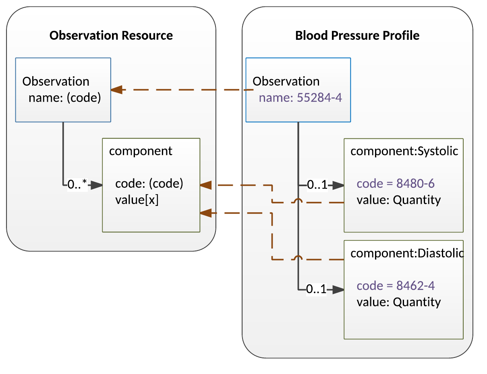

Current Build

 一致性
一致性FHIR Infrastructure  Work Group Work Group | Maturity Level: Normative | Standards Status: Normative |
FHIR基本规范（指本规范）描述了一组基础资源、框架和API接口，这些都可以在医疗保健领域中的许多不同环境中使用。 然而，司法管辖区和整个医疗保健生态系统之间关于实践、要求、法规、教育以及哪些行动可行和/或有益等方面都存在广泛差异。
出于如上原因，FHIR规范其实是一个"平台型规范" - 创建了一个通用的平台或基础设施，然后在其上实现了各种不同的解决方案。 因此，该规范通常需要进一步适应特定的使用环境。通常，这些调整包括:
请注意，由于医疗保健生态系统的性质，可能存在多个重叠的适配组 - 按医疗保健领域、按国家、按机构、按供应商/实施者。
FHIR为此定义了一系列成果物:
| 成果物 | 描述 | US Core 示例 |
| 实现指南(IG) | A coherent and bounded set of adaptations that are published as a single unit. Validation occurs within the context of the Implementation Guide | US Core IG |
| Package | A group of related adaptations that are published as a group within an Implementation Guide | US Core Capability Statements |
| 一致性资源 | 包中的单个资源，用于制定有关实现如何工作的规则。这些会在下面进行描述 | DAF Problem Value Set |
| 规范 | 针对资源的一组约束，表现为具有kind = constraint的StructureDefinition资源。 |
DAF Medication Request |
动词'profile'或者'profiling'被用于描述创建规范的过程。
Typically, Implementation Guides both restrict and extend APIs, resources and terminologies. FHIR provides a set of resources that can be used to represent and share the decisions that have been made, and allows implementers to build useful services from them. These resources are known as the conformance resources. These conformance resources allow implementers to:
These resources need to be used as discussed below, and also following the basic concepts for extension that are described in "Extensibility". For implementer convenience, the specification itself publishes its base definitions using these same resources.
The CapabilityStatement resource describes two different uses for profiles on resources: Resource Profiles and Supported Profiles. Resource Profiles are specified using the CapabilityStatement.rest.resource.profile element and Supported Profiles are specified using the CapabilityStatement.rest.resource.supportedProfile element.
These profiles describe the general features that are supported by the system for each kind of resource. Typically, this is the superset of all the different use-cases implemented by the system. This is a resource-level perspective of a system's functionality.
These profiles describe the information handled/produced by the system on a per use case basis. Some examples of the uses for these kind of profiles:
These profiles represent different use cases leading to handling resources of the type indicated by the CapabilityStatement.rest.resource.type differently. For instance:
For a producer system and a consumer system to exchange data successfully based on one of these supported profiles, it is not enough to know that the systems happen to have profiles that overlap for the use case of interest; the consumer must be able to filter the total set of resources made available by the producer system and deal only with the ones relevant to the use case.
As an example, consider a laboratory system generating thousands of reports a day. 1% of those reports are a particular endocrine report that a decision support system knows how to process. Both systems declare that they support the particular endocrine report profile, but how does the decision support system actually find the endocrine reports that it knows how to process?
One possible option is for the decision support system to receive every single
report coming from the lab system, check whether it conforms to the
profile or not, and then decide whether to process it. Checking whether
a resource conforms to a particular profile or not is a straight
forward operation (one option is to use the provided tools for this),
but this is a very inefficient way - the decision support system has to receive
and process 100 times as many resources as it uses. To help a consumer
find the correct set of reports for a use-case, a producer of
resources also SHALL, for any profile declared in CapabilityStatement.rest.resource.supportedProfile:
Beyond these requirements, a producer of resources SHOULD ensure that any resource instance that would reasonably be expected to conform to the declared profiles SHOULD be published in this form.
Implementation Note: There are many uninvestigated issues associated with this use of profiles. HL7 is actively seeking feedback from users who experiment in this area, and users should be prepared for changes to features and obligations in this area in the future.
Feedback is welcome here
A CapabilityStatement resource lists the REST interactions (read, update, search, etc.) that a server provides or that a client uses, along with some supporting information for each. It can also be used to define a set of desired behaviors (e.g. as part of a specification or a Request for Proposal). The only interaction that servers are required to support is the capabilities interaction itself - to retrieve the server's CapabilityStatement. Beyond that, servers and clients support and use whichever API calls are relevant to their use case.
In addition to the operations that FHIR provides, servers may provide additional operations that are not part of the FHIR specification. Implementers can safely do this by appending a custom operation name prefixed with '$' to an existing FHIR URL, as the Operations framework does. The Conformance resource supports defining what OperationDefinitions make use of particular names on an end-point. If services are defined that are not declared using OperationDefinition, it may be appropriate to use longer names, reducing the chance of collision (and confusion) with services declared by other interfaces. The base specification will never define operation names with a "." (period) in them, so implementers are recommended to use some appropriate prefix in their names (such as "ihe.someService") to reduce the likelihood of name conflicts.
Implementations are encouraged, but not required, to define operations using the standard FHIR operations framework - that is, to declare the operations using the OperationDefinition resource, but some operations may involve formats that can't be described that way.
Implementations are also able to extend the FHIR API using additional content types. For instance, it might be useful to read or update the appointment resources using a vCard based format. vCard defines its own mime type, and these additional mime types can safely be used in addition to those defined in this specification.
Extending and restricting resources (collectively known as 'profiling a resource') is done with a "StructureDefinition" resource, which is a statement of rules about how the elements in a resource are used, and where extensions are used in a resource.
One key function of profiles is to change the cardinality of an element. A profile can restrict the cardinality of an element within the limits of the base structure it is constraining. This table summarizes what types of restrictions are allowed:
| derived (across) base (down) | 0..0 (Not used) | 0..1 (optional) | 0..n (optional, many) | 1..1 (required) | 1..n (at least 1) |
| 0..1 | yes | yes | no | yes | no |
| 0..* | yes | yes | yes | yes | yes |
| 1..1 | no | no | no | yes | no |
| 1..* | no | no | no | yes | yes |
When a profile is constraining another profile where there are more cardinality options (e.g. low is not just 0 or 1, and high is not just 1 or *), the same principles still apply: the constraining profile can only allow what the base profile allows.
Note that though a profile can constrain an element from x..* to x..1, this doesn't make any difference to the representation in the JSON format - the element will still be represented in an array. As an example, take Patient.name which has a cardinality of 0..*. In an unprofiled Patient, this will be represented as:
{
"resourceType" : "Patient",
"name" : [{
"text" : "Peter James"
}]
}
Even if a profile is created on the resource that narrows the cardinality to 1..1, applications will still process the resource without knowledge of the profile. For this reason the representation will still be the same.
What StructureDefinitions can do when they are constraining existing resources and datatypes is limited in some respects:
The consequence of this is that if a profile mandates extended behavior that cannot be ignored, it must also mandate the use of a modifier extension. Another way of saying this is that knowledge must be explicit in the instance, not implicit in the profile.
As an example, if a profile wished to describe that a Procedure resource was being negated (e.g. asserting that it never happened), it could not simply say in the profile itself that this is what the resource means; instead, the profile must say that the resource must have an extension that represents this knowledge.
There is a facility to mark resources to indicate that they can only be safely understood by a process that is aware of and understands a set of published rules. For more information, see Restricted Understanding of Resources.
A "constraint" StructureDefinition specifies a set of restrictions on the content of a FHIR resource or data type, or an additional set of constraints on an existing profile. A given structure definition is identified by its canonical URL, which SHOULD be the URL at which it is published. The following kinds of statements can be made about how an element is used, using a series of Element Definitions:
or HL7 v3 ) for the resource when used in a particular contextAny changed definitions SHALL be restrictions that are consistent with the rules defined in the resource in the FHIR Specification from which the profile is derived. Note that some of these restrictions can be enforced by tooling (and are by the FHIR tooling), but others (e.g. alignment of changes to descriptive text) cannot be automatically enforced.
Note that structure definitions cannot 'remove' mappings and constraints that are defined in the base structure, but for purposes of clarity, they can refrain from repeating them.
A structure definition contains a linear list of element definitions. The inherent nested structure of the elements is derived from the path value of each element. For instance, a sequence of the element paths like this:
defines the following structure:
<Root>
<childA>
<grandChild1/>
</childA>
<childB/>
</Root>
or its JSON equivalent. The structure is coherent - children are never implied, and the path statements are always in order. The element list is a linear list rather than being explicitly nested because element definitions are frequently re-used in multiple places within a single definition, and this re-use is easier with a flat structure.
StructureDefinitions may contain a differential statement, a snapshot statement or both.
Differential statements describe only the differences that they make relative to the structure definition they constrain (which is most often the base FHIR resource or data type). For example, a profile may make a single element mandatory (cardinality 1..1). In the example of a differential structure, it will contain a single element with the path of the element being made mandatory, and a cardinality statement. Nothing else is stated - all the rest of the structural information is implied (note that this means that a differential profile can be sparse and only mention the elements that are changed, without having to list the full structure. This rule includes the root element - it is not needed in a sparse differential).
Note that a differential can choose not to constrain elements. Doing so means that the profile will be more flexible in terms of compatibility with other profiles, but will require more work to support from implementing systems. Alternatively, a profile can constrain all optional elements to be not present (max cardinality = 0) - this closes the content, which makes implementation easier, but also reduces its usefulness.
In order to properly understand a differential structure, it must be applied to the structure definition on which it is based. In order to save tools from needing to support this operation (which is computationally intensive - and impossible if the base structure is not available), a StructureDefinition can also carry a "snapshot" - a fully calculated form of the structure that is not dependent on any other structure. The FHIR project provides tools for the common platforms that can populate a snapshot from a differential (note that the tools generate complete verbose snapshots; they do not support suppressing mappings or constraints).
StructureDefinitions can contain both a differential and a snapshot view. In fact, this is the most useful form - the differential form serves the authoring process, while the snapshot serves the implementation tooling. StructureDefinition resources used in operational systems should always have the snapshot view populated.
One common feature of constraining StructureDefinitions is to take an element that may occur more than once (e.g. in a list), and then split the list into a series of sub-lists, each with different restrictions on the elements in the sub-list with associated additional meaning. In FHIR, this operation is known as "Slicing" a list. It is common to "slice" a list into sub-lists with each containing just one element, effectively putting constraints on each element in the list.
Here is an example to illustrate the process:
In this example, the base structure definition for the resource Observation defines the "component" element which contains a nested code and a value for observations that have multiple values. A classic example of this kind of observation is a blood pressure measurement - it contains 2 values, one for systolic, and one for diastolic (example).
This diagram shows the conceptual process of 'slicing' the component list into systolic and diastolic slices (note that to avoid clutter, the "name" attribute of Observation is shown as just a code not a full CodeableConcept).
The structure definition for Blood Pressure splits the component list into two sublists of one element each: a systolic element, and a diastolic element. Each of these elements has a fixed value for the code element (a fixed LOINC code for the name), and both have a value of type Quantity. This process is known as "slicing" and the Systolic and Diastolic elements are called "slices".
Note that when the resource is exchanged, the serialization format that is exchanged is not altered by the constraining definition. This means that the item profile names defined in the structure definition ("systolic", etc. in this example) are never exchanged. A resource instance looks like this:
<Observation>
...
<component>
<code {LOINC="8480-6"}/>
<value ...>
</component>
<component>
<code {LOINC="8462-4"}/>
<value ...>
</component>
</Observation>
In order to determine that the first related item corresponds to "Systolic" in the structure definition, so that it can then determine to which additional constraints for a sub-list the item conforms, the system checks the values of the elements. In this case, the "code" element in the target resource can be used to determine which slice that target refers to. This element is called the "discriminator".
In the general case, systems processing resources using a structure definition that slices a list can determine the slice corresponding to an item in the list by checking whether the item's content meets the rules specified for the slice. This would require a processor to be able to check all the rules applied in the slice and to do so speculatively in a depth-first fashion. Both of these requirements are inappropriately difficult for an operational system, and particularly for generated code (e.g. software that is automatically produced based on the StructureDefinition). Thus, to provide a better way to distinguish slices, a sliced element can designate a field or set of fields that act as a "discriminator" used to tell the slices apart.
When a discriminator is provided, the composite of the values of the elements designated in the discriminator is unique and distinct for each possible slice and applications can easily determine which slice an item in a list is. The intention is that this can be done in generated code, e.g. using a switch/case statement.
When a constraining structure designates one or more discriminators, it SHALL ensure that the possible values for each slice are different and non-overlapping, so that the slices can easily be distinguished.
Each discriminator is a pair of values: a type that indicates how the field is processed when evaluating the discriminator, and a FHIRPath expression that identifies the element in which the discriminator is found. There are five different processing types for discriminators:
| value | The slices have different values in the nominated element. |
| exists | The slices are differentiated by the presence or absence of the nominated element. |
| pattern | The slices have different values in the nominated element, as determined by testing them against the applicable ElementDefinition.pattern[x]. |
| type | The slices are differentiated by type of the nominated element. |
| profile | The slices are differentiated by conformance of the nominated element to a specified profile. Note that if the path specifies .resolve() then the profile is the target profile on the reference. In this case, validation by the possible profiles is required to differentiate the slices. |
The FHIRPath statement that allows for the selection of the element on which the discriminator is based is a restricted FHIRPath statement that is allowed to include:
component.value)extension(url) to allow selection of a particular extensionresolve() to allow slicing across resource boundariesFurther notes about the use of the different discriminator types:
| value |
This is the most commonly used discriminator type: to decide based on the value of an element.
Elements used like this are mostly primitive types- code, uri.
Typical example: slice on the value of Patient.telecom.system, for values phone, email etc.
|
| pattern |
This is mostly used with elements of type CodeableConcept where the elements are distinguished by the presence of a particular code
but other codes are expected to be present, and are irrelevant for the slice matching process.
Typical example: slice on the value of Observation.code, for values LOINC codes 1234-5, 4235-8 etc
|
| exists | This is not used commonly - it only has 2 values, so not much discrimination power. It's mainly used as an adjunct slicing criteria along with other discriminators. Elements used like this are mostly complex backbone elements. Typical example: slice on the pattern of Observation.code and the presence of Observation.component. |
| type |
Used to match slices based on the type of the item.
While it can be used with polymorphic elements such as Observation.value[x],
mostly it is used with Resource types on references, to apply different profiles based on the different resource type.
Typical example: slice on the type of List.item.resolve() for the types Patient, RelatedPerson.
|
| profile |
Used to match slices based on the whether the item conforms to the specified profile.
This provides the most power, since the full range of profiling capabilities are available,
but it is also the hardest to implement, and requires the most processing (>1000-fold compared
to the others). Implementers should use this only where absolutely required.
Typical example: slice on the type of Composition.section.entry() for the profiles Current-Clinical-Condition, Past-Medical-Event, etc
|
Each slice must use the element definition for the
element(s) in the discriminator(s) to ensure that the slices are clearly differentiated by
assigning an appropriate value domain, depending on the discriminator type. If the type is value, or pattern, then the element definition must use either:
It is the composite (combined) values of the discriminators that are unique, not each discriminator alone. For example, a slice on a list of items that are references to other resources could designate fields from different resources, where each resource only has one of the designated elements, as long as they are distinct across slices.
A structure definition is not required to designate any discriminator at all for a slice, but those that don't identify discriminators are describing content that is very difficult to process, and so this is discouraged.
Within a structure definition, a slice is defined using multiple element entries that share a path but have distinct names. These entries together form a "slice group" that is:
Some examples of discriminators:
| Context | Discriminator Type | Discriminator Path | Interpretation |
| List.entry | value | item.resolve().name | Entries are differentiated by the name element on the target resource - probably an observation, which could be determined by other information in the profile |
| List.entry | type | item.resolve() | Entries are differentiated by the type of the target element that the reference points to |
| List.entry | profile | item.resolve() | Entries are differentiated by a profile tag on the target of the reference, as specified by a structure definition in the profile |
| List.entry | value | item.extension("http://acme.org/extensions/test").value | Entries are differentiated by the value of the code element in the extension with the designated URL |
| List.entry.extension | value | url | Extensions are differentiated by the value of their url property (usually how extensions are sliced) |
| List.entry | type, value | item.resolve(), item.resolve().value | Extensions are differentiated by the combination of the type of the referenced resource, and, if it has one, the code element of that resource. This would be appropriate for where a List might be composed of a Condition, and set of observations, each differentiated by its name - the condition has no name, so that is evaluated as a null in the discriminator set |
| Observation.value[x] | type | $this | Different constraints (e.g. "must support", usage notes, vocabulary bindings, etc.) are asserted for different supported types for the multi-typed element Observation.value[x] |
Note that discriminator types of type and profile can also be used where a repeating element contains a resource directly (e.g. DomainResource.contained, Bundle.entry, Parameters.parameter.resource).
The examples of slicing and discriminators show exactly how this and other typical uses of slicing are represented in profiles.
Note that extensions are always sliced by the url element, though they may be resliced on additional elements where required.
When an element of a fixed cardinality m..n is sliced, the following rules apply:
nnm - the only situation where this is allowed), but the total number of elements in the instance must still be greater or equal to mThere is a special slice, called the default slice. This allows a profile to describe a set of specific slices, and then make a set of rules that apply to all of the remaining content that is not in one of the defined slices. Some rules about the default slice:
@default. The sliceName '@default' is reserved and cannot be used in any other context
One use of a default slice would be the case where the profile slices
an identifier element to require a set of known identifiers, where
the type element is prohibited (since they are known identifiers) but requires
type on all other identifiers if any are present. In this case, the
default slice makes no rules about the identifier.system (which is the slicing discriminator),
but fixes the cardinality of type to 1..1 in the @default slice.
Profiles can be based on other profiles, and can apply further constraints to those already specified. This is a useful technique, but implementers should be wary of over-use - humans have trouble understanding the implications of deep stacks of constraining profiles.
When a profile constrains another profile, it can make additional constraints, including extending the discriminator, adding new slices (if the slices are not already closed), and slicing inside the existing slices.
The rules for constraining ElementDefinition.slicing are as follows:
ElementDefinition.slicing.rule can be constrained from open to closedElementDefinition.slicing.ordered can be constrained from false to trueIt's sometimes necessary to slice data that has already been sliced in the base profile - that is, create new slices within the existing slices. This is called "Re-slicing". The rules for re-slicing are as follows:
When you slice, you define a name for each new slice. The name has to be unique across the set of slices in the profile. So if profile A defines an element X with cardinality 0..*, and profile B is derived from profile A, then profile B can either:
Then, profile C derives from profile B. Profile C can do the following:
Note that it is possible for Profile C to make rules that are incompatible with profile B, in which case there is no set of instances that can be valid against profile C
In addition to the above, there are times when Profile C will need to further slice a slice defined in B. In this case, there's a need to reference both the ElementDefinition.sliceName of the original slice from Profile B as well as to define an ElementDefinition.sliceName for the slice defined within Profile C. This is done by separating the names using "/". For example, if Profile B defines the slice "example", and profile C defines the slice "example/example1", then this is deemed to be "example1" slice of the example slice. This process can continue indefinitely by separating each layer of slicing names with the "/" character. This pattern applies to @default too: @default/@default.
An extension definition defines the URL that identifies the extension and which is used to refer to the extension definition when it is used in a resource.
The extension definition also defines the context where the extension can be used (usually a particular path or a data type) and then defines the extension element using the same details used to profile the structural elements that are part of resources. This means that a single extension can be defined once and used on different resources and/or datatypes, e.g. one would only have to define an extension for "hair color" once, and then specify that it can be used on both Patient and Practitioner.
For further discussion of defining and using extensions, along with some examples, see Extensibility.
Once defined, an extension can be used in an instance of a resource without any Profile declaring that it can, should or must be, but Profiles can be used to describe how an extension is used.
To actually prescribe the use of an extension in an instance, the extension list on the resource needs to be sliced. This is shown in the extensibility examples
Note that the minimum cardinality of an extension SHALL be a valid restriction on the minimum cardinality in the definition of the extension. If the minimum cardinality of the extension is 1 when it is defined, it can only be mandatory when it is added to a profile. This is not recommended - the minimum cardinality of an extension should usually be 0.
Coded elements have bindings that link from the element to a definition of the set of possible codes that the element may contain. The binding identifies the definition of the set of possible codes and controls how tightly the set of the possible codes is interpreted.
The set of possible codes is either a formal reference to a ValueSet resource, which may be version specific, or a general reference to some web content that defines a set of codes. The second is most appropriate where a set of values is defined by some external standard (such as mime types). Alternatively, where the binding is incomplete (e.g. under development) just a text description of the possible codes can be provided.
Bindings have a property that defines the degree of flexibility associated with the use of the codes in the value set. See Binding Strength for further information.
CodeSystem resources can be used to carry definitions of local codes (Example) and ValueSets can mix a combination of local codes and standard codes (e.g. LOINC, SNOMED), or just to choose a particular set of standard codes (examples: LOINC, SNOMED, RxNorm). Profiles can bind to these value sets instead of the ones defined in the base specification, following these rules:
| Binding Strength in base specification | Customization Rules in Profiles |
| required | The value set can only contain codes contained in the value set specified by the FHIR specification |
| extensible | The value set can contain codes not found in the base value set. These additional codes SHOULD NOT have the same meaning as existing codes in the base value set |
| preferred or example | The value set can contain whatever is appropriate for local use |
Note that local codes are not as interoperable as standard published code systems (e.g. LOINC, SNOMED CT), so it is preferable to use standard code systems.
A profile can change the terminology binding of an element - both strength and value set - within the limits of the base structure it is constraining. This table summarizes the changes that can be made to the binding strength:
| derived (across) base (down) | required | extensible | preferred | example |
| required | yes | no | no | no |
| extensible | yes | yes | no | no |
| preferred | yes | yes | yes | no |
| example | yes | yes | yes | yes |
Note that a constraining profile may leave the binding strength the same and change the value set instead. Whatever the constraining profile does, it cannot make codes valid that are invalid in the base profile.
One of the properties that can be declared on profiles but not on resource or data type definitions is 'mustSupport'. This is a boolean property. If true, it means that systems claiming to conform to a given profile must "support" the element. This is distinct from cardinality. It is possible to have an element with a minimum cardinality of "0", but still expect systems to support the element.
The meaning of "support" is not defined by the base FHIR specification, but can be set to true in a profile. When a profile does this, it SHALL also make clear exactly what kind of "support" is required. Examples include:
The specific meaning of "Must Support" for the purposes of a particular profile SHALL be described in the ElementDefinition.definition,
the general StructureDefinition.description or in other documentation for the implementation guide that includes the profile.
If creating a profile based on another profile, Must Support can be changed from false to true, but cannot be changed from true to false. Note that an element that has the property IsModifier is not necessarily a "key" element (e.g. one of the important elements to make use of the resource), nor is it automatically mustSupport - however both of these things are more likely to be true for IsModifier elements than for other elements.
Implementations can define search criteria in addition to those defined in the specification itself. Search criteria fall into one of four categories:
Additional Search Parameters can be defined using the SearchParameter resource.
When this specification describes a profile, the profile is presented in 5 different forms:
| Text Summary | This presents a short summary human readable summary of the profile - a combination of the author's summary, and some automatically generated summary content |
| Differential Table | This is a view of the differential statement (see above). For context, additional information not in the differential is also shown partially transparent |
| Snapshot Table | This is a view of the snapshot produced by the profile (see above). The information is a comprehensive view of what the profile means |
| XML Template | An example of what the profile looks like in XML format |
| JSON Template | An example of what the profile looks like in JSON format |
Applications may be required to support more than one profile at a time.
A typical example might be an EHR application that is required to support
a general purpose data sharing profile (such as DAF ),
and also must support specific profiles for decision support using the same
interface.
The impact of supporting two sets of profiles depends on whether resources are being created or consumed. When an application is creating content, it must create content that conforms to both sets of profiles - that is, the intersection of the profiles. When an application is consuming information, then it must be able to consume content that conforms to either set of profiles - that is, the union of the profiles.
Since applications generally consume and produce resources at the same time, conforming to more than one profile might not be possible, unless the profiles are designed to make statements at different levels - and the case above is one such case, where one profile is focused on data access, provenance, and availability, the other profile is focused on clinical content.
Accordingly, profiles can relate to each other in four different ways. Each profile can be thought of in terms of the set of instances that conform to the profile:
Profiles can be compared to determine their compatibility.
One such comparison can be found (no - todo: bring this into the build)
between DAF and QICore .
Note that this comparison is generated by tooling under ongoing development, and is purely draft
content to demonstrate the idea of profile comparison.
®© HL7.org 2011+. FHIR Release 4 Candidate (v3.6.0-37a1e2dde) generated on Tue, Dec 4, 2018 22:03+0000. QA Page
Links: Search |
Version History |
Table of Contents |
Credits |
Compare to DSTU3 |
Ballot Comparison |
 |
Propose a change
|
Propose a change